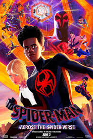

Spider-Man: Across the Spider-Verse

Ver más
La secuela de "Spider-Man: Into the Spider-Verse" sigue las aventuras de Miles Morales en múltiples universos paralelos con nuevos personajes y mucha acción.